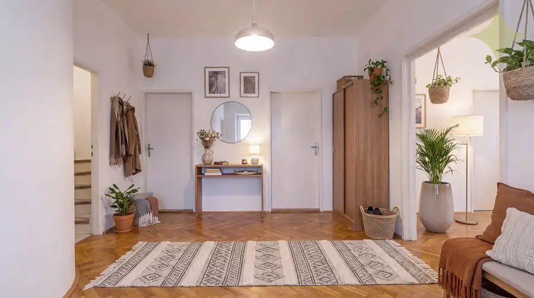
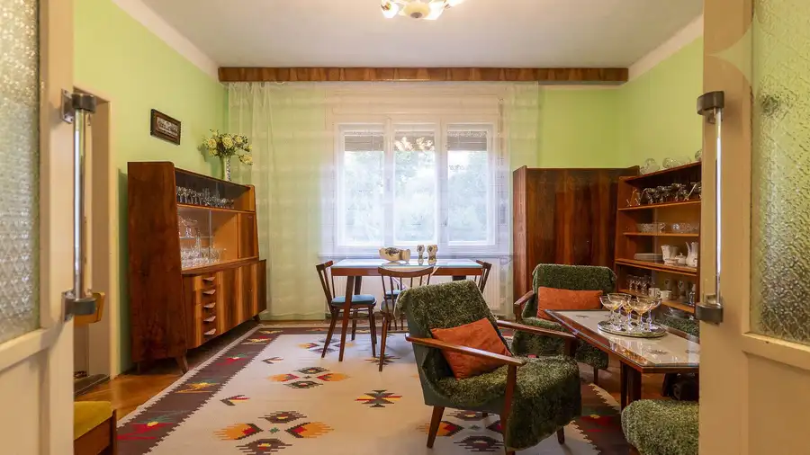
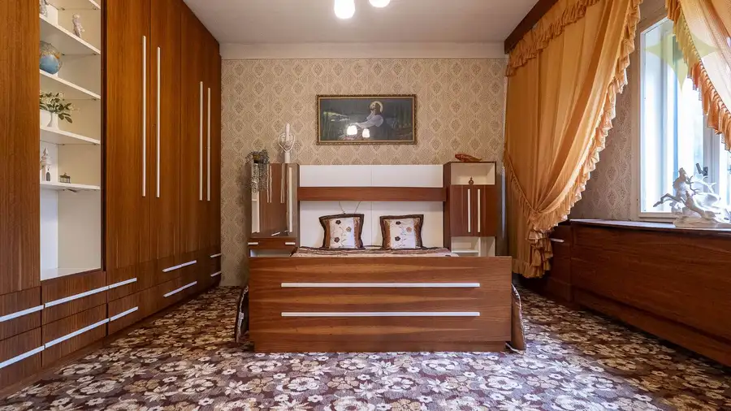
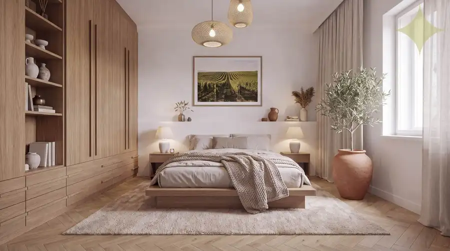
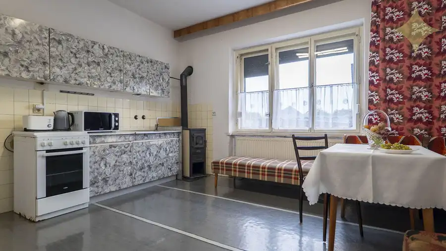
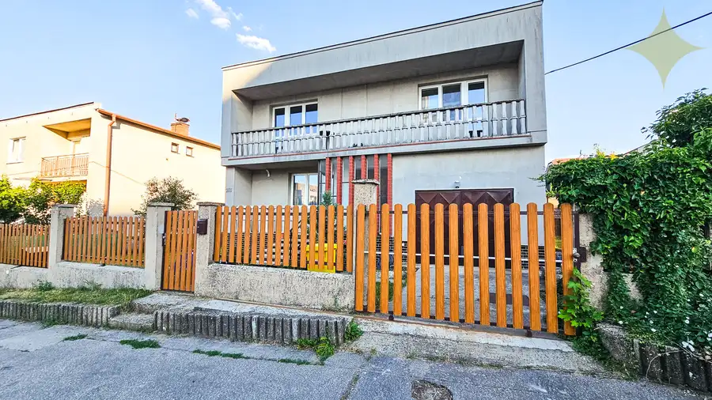

Rodinný dom s veľkým potenciálom | Vráble – Horný Ohaj | pozemok 1 251 m²
Vráble






- Plocha205 m²
- StavPôvodný stav
- VlastníctvoOsobné
O nehnuteľnosti
Ponúkame na predaj samostatne stojaci rodinný dom vo Vrábľoch, v mestskej časti Horný Ohaj, situovaný v tichej slepej ulici. Nehnuteľnosť stojí na rovinatom pozemku s celkovou výmerou 1 251 m² a je vhodná pre kupujúceho, ktorý nehľadá hotovú novostavbu, ale dom s priestorom a potenciálom vytvoriť si bývanie podľa vlastných predstáv.Dom bol daný do užívania v roku 1964. Je v pôvodnejšom stave, vyžaduje modernizáciu, zároveň je však v stave spôsobilom na celoročné bývanie. Je samostatne stojaci, má suterén, jedno nadzemné podlažie a čiastočne obytné podkrovie.Pripravili sme si pre Vás aj videoprezentáciu, ktorú si môžete pozrieť na tomto linku: https://youtu.be/rjl7v6pqBYUDISPOZÍCIA DOMUJednou z hlavných predností domu je jeho dispozícia a veľkorysé priestory.Prízemie tvorí vstupné zádverie a priestranná centrálna hala, z ktorej sú prístupné jednotlivé časti domu. Nachádzajú sa tu tri obytné miestnosti, kuchyňa so špajzou, kúpeľňa, samostatné WC a schodisko vedúce do podkrovia aj suterénu.Hlavná obytná časť ponúka veľkú obývaciu izbu prepojenú so spálňou. Zachované dvojkrídlové dvere a veľkosť miestností dávajú dobrý základ na rekonštrukciu bez toho, aby bolo potrebné pracne vytvárať priestor tam, kde dnes nie je.Podkrovie je ďalším výrazným potenciálom domu. Je čiastočne obytné a pozostáva z dvoch obytných miestností a ďalších priestorov. Jedna časť môže po rekonštrukcii vytvoriť ďalšiu obytnú zónu – napríklad pre dospelé deti, rodičov alebo hostí.Druhá časť ponúka veľký otvorený priestor vrátane súčasnej terasy, ktorý dáva možnosť vytvoriť napríklad zimnú záhradu, ateliér, pracovňu alebo kombináciu týchto funkcií. Práve táto časť domu ponúka pri rekonštrukcii zaujímavú možnosť rozšíriť využiteľný obytný priestor.Dom je podpivničený. Suterén pozostáva z viacerých technických a skladových miestností a poskytuje dostatok priestoru na uskladnenie aj technické zázemie domu.TECHNICKÉ INFORMÁCIEDom je murovaný z keramických tehál hrúbky približne 400 mm. Strechu tvorí drevený stanový krov s krytinou z pálenej škridly. V obytných miestnostiach sú prevažne masívne parkety.Vykurovanie je ústredné teplovodné prostredníctvom oceľových panelových radiátorov, zdrojom je elektrický kotol. Ohrev teplej vody zabezpečuje samostatný elektrický zásobníkový ohrievač.Dom je napojený na: – elektrickú energiu, – verejný vodovod, – verejnú kanalizáciu.Pri pozemku sa nachádza aj plynová prípojka s možnosťou napojenia domu. Súčasný dom na plyn napojený nie je, keďže pôvodný majiteľ túto možnosť nevyužil.Na pozemku sa zároveň nachádza vlastná kopaná studňa s hĺbkou približne 8 metrov a elektrickým čerpadlom.POZEMOK A ĎALŠIE STAVBYVeľkou devízou nehnuteľnosti je rovinatý pozemok s výmerou 1 251 m². Ponúka dostatok priestoru na vytvorenie terasy, bazéna, oddychovej časti, detského ihriska či úžitkovej záhrady bez toho, aby záhrada stratila svoj charakter a priestor.Na pozemku sa nachádza aj samostatná murovaná garáž so zastavanou plochou 34,53 m², ktorá bola daná do užívania v roku 1976. Súčasťou nehnuteľnosti sú tiež ďalšie hospodárske a skladové stavby.LOKALITAHorný Ohaj je mestskou časťou Vrábeľ, takže získavate pokojnejšie bývanie mimo ruchu centra, ale zároveň zostávate priamo vo Vrábľoch.Dom sa nachádza v tichej slepej ulici so zástavbou iba na jednej strane, čo výrazne obmedzuje prejazd áut a bežný dopravný ruch. Do centra Vrábeľ je to pritom len niekoľko minút.Táto nehnuteľnosť nie je o tom, ako vyzerá dnes. Je o priestore, ktorý už existuje – a o tom, čo z neho môžete vytvoriť.Jeden dom vidíte dnes. Ten druhý si môžete vytvoriť.Ak v tomto dome vidíte potenciál pre svoje budúce bývanie, rád vás privítam na osobnej obhliadke, kde si môžete jeho priestor, dispozíciu aj možnosti pozrieť naživo.CENA: 147 000 EurTáto inzercia nie je verejnou ponukou na uzavretie zmluvy. Vlastník si vyhradzuje právo rozhodnúť, komu a za akých podmienok prevedie svoje vlastnícke právo. Pri tejto ponuke je možné licitovať kúpnu cenu podľa všeobecných podmienok licitácie v sieti Premium Living.Osobnú obhliadku si viete dohodnúť na tel. čísle 0903 425 347, Ing. Martin Sklenármail: martin.sklenar@premiumliving.skEnergetický certifikát nebol predložený.Samozrejmosťou je aj vybavenie najvýhodnejšieho hypotekárneho úveru šitého na mieru práve pre Vás v akejkoľvek banke. Taktiež súdny znalec v obore stavebníctva a oceňovania nehnuteľností, ktorý Vám vyhotoví znalecký posudok.
Parametre
- Druh
- Rodinný dom
- Druh domu
- Klasický dom
- Dátum zverejnenia
- 11. 09. 2026
- Energetický certifikát budovy
- nie je
- Plocha pozemku
- 1251 m²
- Počet garáží
- 1
- Počet nadzemných podlaží
- 3
- Počet podzemných podlaží
- 1
- Počet vonkajších parkovacích miest
- 3
- Stav nehnuteľnosti
- Pôvodný stav
- Terén pozemku
- Rovinatý
- Typ
- Predaj
- Typ konštrukcie
- Tehlová
- Vlastníctvo
- Osobné
- Vybavenie
- Garáž, Vonkajšie parkovacie miesto, Špajza, Sklad, Technická miestnosť
- Zariadenie
- Čiastočne zariadené
- Zastavaná plocha
- 137 m²
- Úžitková plocha
- 205 m²
Kde to je


Mohlo by Vás zaujímať
 BytNové
165 000 €3-izbový prerobený byt s loggiou | na Hôrke, Nitra – diely
Nitra
3-izbový61.4 m²2. podlažie
BytNové
165 000 €3-izbový prerobený byt s loggiou | na Hôrke, Nitra – diely
Nitra
3-izbový61.4 m²2. podlažie
 Komerčné priestoryNové
735 000 €Historický Vežičkový dom v centre Nitry – príležitosť vrátiť život jednej z výrazných budov mesta
Nitra
803 m²
Komerčné priestoryNové
735 000 €Historický Vežičkový dom v centre Nitry – príležitosť vrátiť život jednej z výrazných budov mesta
Nitra
803 m²

DomNové 299 900 €Dvojgeneračný dom po rekonštrukcii interiéru s pekným pozemkom Golianova ul., Nitra - Čermáň Nitra 204 m²